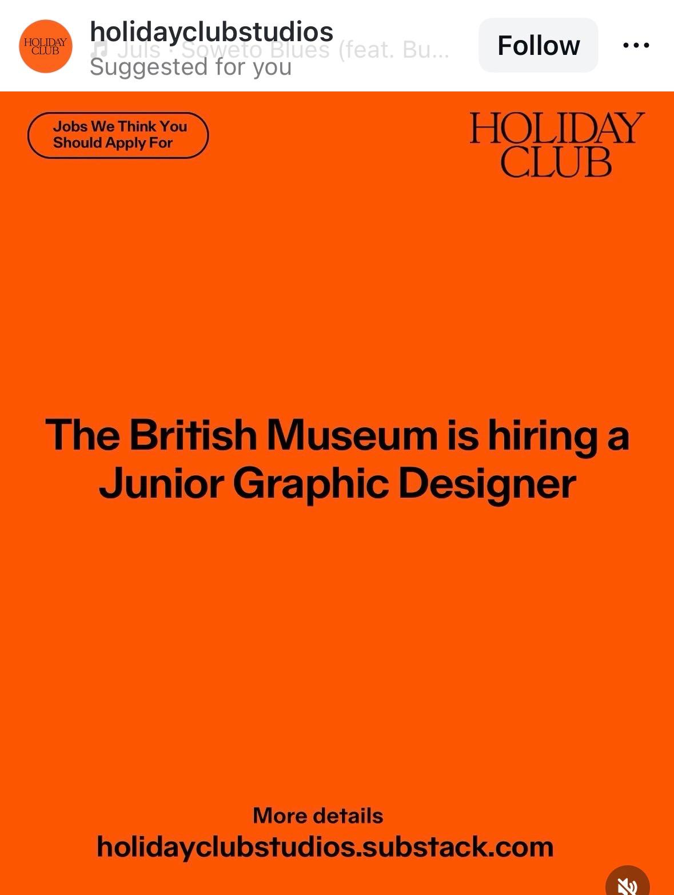

Snapshot & assessment for Maia
Role identified: Junior Graphic Designer.
This looks relevant for Maia because it is a junior creative role inside a major cultural institution. That said, the current live status could not be fully confirmed from accessible official pages, so it should stay visible on the site as an incomplete-but-useful lead rather than a clean active listing.
Why it fits: major museum context, junior creative role, likely strong design exposure, culturally aligned environment.
Main issue: live status is unclear and some important practical details are still missing.
Recommended action: keep visible for Maia, with links and notes, until someone confirms whether the role is still active.
Company mini-profile
The British Museum is one of the best-known cultural institutions in the UK. Even without full confirmation on this listing, the environment itself is highly relevant to Maia’s broader interests in design, culture, exhibitions, and institution-based creative work.
Source links
Role details
- Role: Junior Graphic Designer
- Organisation: The British Museum
- Source shown in screenshot: Holiday Club / holidayclubstudios.substack.com
- Likely domain: graphic design / arts & culture / museum
- Useful extra detail found: LinkedIn search snippet suggests the role involved print, digital, spatial, and narrative applications, and contributing to the Museum’s new brand identity.
- Not yet confirmed: location, pay, deadline, work mode, application close date
Verification notes
The role appears to have existed, based on external search results and the curated Holiday Club roundup. However, the official British Museum jobs page could not be directly checked from this environment, and the LinkedIn listing now appears to redirect to a generic jobs page, which may indicate the role has expired.
Practical status: useful lead, not fully verified active listing.
What Maia should know
This is worth keeping on the board because the institution and role type are meaningfully relevant. But it should be treated as a lead that needs a quick manual check on the official jobs page before any serious application effort.